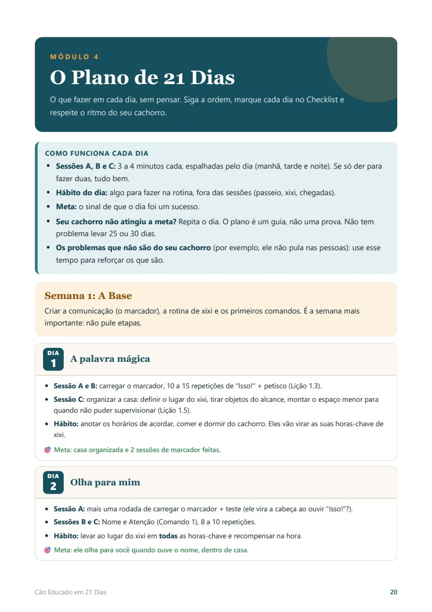
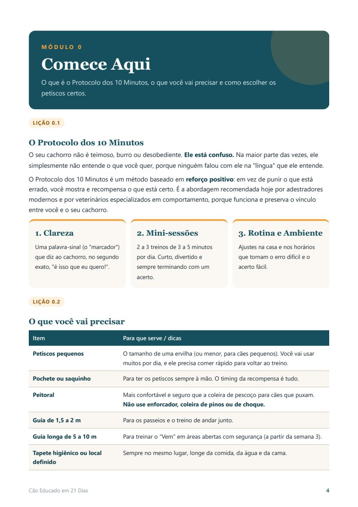
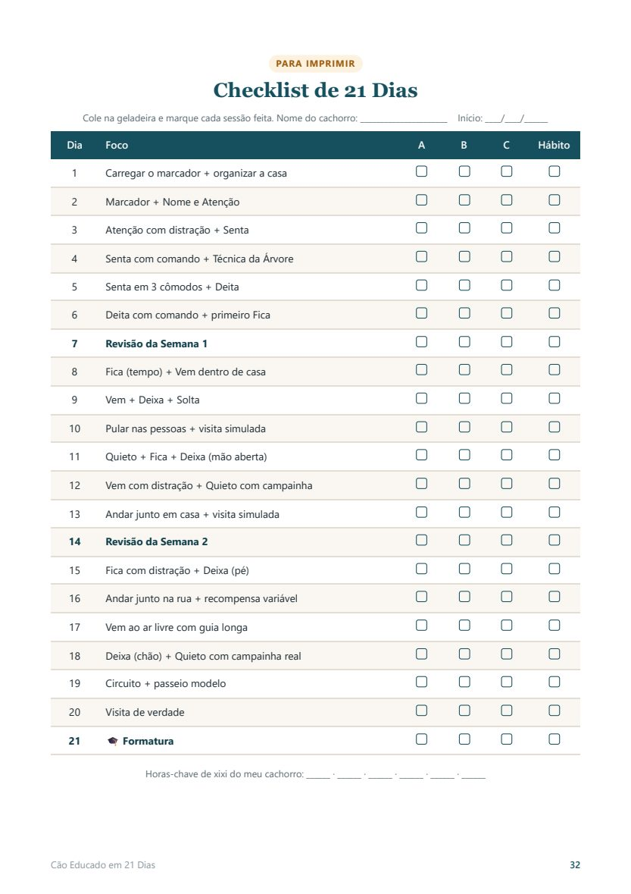

Sem gritos, sem castigo e sem pagar caro em adestrador. Um passo a passo simples, dia a dia, baseado em reforço positivo.

Primeiro, respira. A culpa não é sua. E também não é dele.
Imagine alguém gritando com você em uma língua que você não entende, e ficando cada vez mais bravo porque você "não obedece". É assim que o seu cachorro se sente.
Quando você briga depois do xixi, ele não entende que foi pelo xixi. O cachorro liga a bronca ao que fez nos últimos 2 segundos. Ele só aprende que "às vezes meu tutor fica bravo do nada", e passa a fazer escondido.
Um método simples, baseado em reforço positivo, a abordagem usada por adestradores modernos e recomendada por veterinários especializados em comportamento. Tudo se apoia em 3 pilares:
Uma palavra-sinal que diz ao seu cachorro, no segundo exato, "é isso que eu quero!". É a tradução que faltava.
2 a 3 treinos de 3 a 5 minutos por dia. Cachorro aprende mais em blocos curtos, e você encaixa na rotina.
Pequenos ajustes na casa e nos horários que tornam o erro difícil e o acerto fácil, antes mesmo de treinar.
O método, a lista de materiais e como escolher os petiscos certos.
Por que brigar piora tudo, a Regra dos 2 Segundos e como "carregar" o marcador.
Atenção, Senta, Deita, Fica, Vem e Deixa/Solta, com passo a passo, erros comuns e teste de aprovação.
Xixi no lugar certo · Fim do puxão na guia · Latido sob controle · Chega de pular nas visitas · Mordidas e destruição · Ficar sozinho com mais calma.
O que fazer em cada dia, sem pensar: sessões, hábito do dia e meta. É só abrir e seguir.
Como tirar o petisco aos poucos, rotina semanal de 5 minutos e o que fazer quando ele "regredir".


| Aulas com adestrador em casa (pacotes) | centenas a milhares de reais |
| Sofá, tapetes e móveis estragados | você sabe quanto... |
| Multa ou advertência do condomínio | e o estresse junto |
| Cão Educado em 21 Dias | R$ 37,90 |
Pagamento único. Menos que um saco de ração.
Entre, leia e comece a aplicar. Se em até 7 dias você achar que não é para você, é só pedir o reembolso e devolvemos 100% do valor. Sem perguntas e sem burocracia. O risco é todo nosso.
Sim. Cachorro aprende em qualquer idade, só muda o ritmo. O guia traz orientações específicas para cães idosos.
Sim. O método é baseado em como todos os cães aprendem. Você ajusta o ritmo e os petiscos ao seu cachorro.
São cerca de 10 minutos por dia, divididos em 2 ou 3 mini-sessões. O próprio método foi pensado para quem tem a rotina corrida.
Só petiscos pequenos e uma guia com peitoral. A lista completa, com alternativas baratas, está no Módulo 0.
Logo após a confirmação do pagamento, você recebe o acesso no e-mail cadastrado. No Pix e no cartão, a liberação costuma ser imediata.
É um guia digital completo em PDF, com passo a passo, plano dia a dia e páginas para imprimir. Você pode ler no celular, no computador ou imprimir.
Você tem 7 dias de garantia incondicional. Se não gostar, devolvemos 100% do valor.
Casos de agressividade (morder pessoas ou outros animais) precisam de avaliação presencial com um profissional de comportamento. O guia não substitui esse atendimento.
Você pode continuar limpando xixi, pedindo desculpas ao vizinho e passando vergonha no passeio...
Ou pode chegar em casa e ser recebido(a) por um cachorro mais calmo, que te entende, e que você entende também.
Seu cachorro está contando com você. 🐶